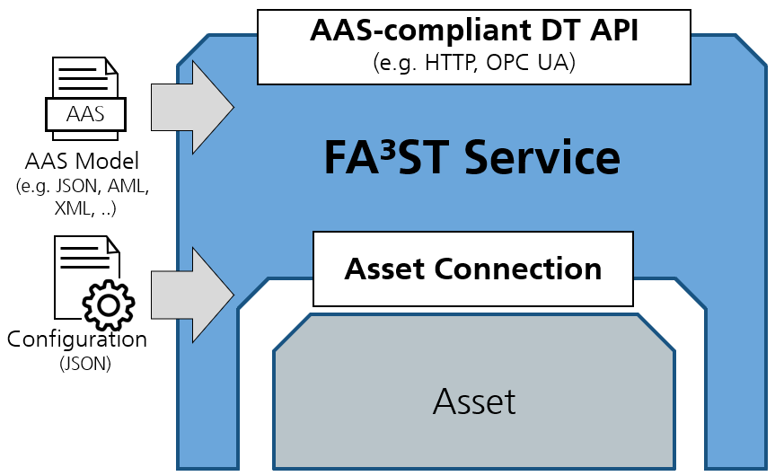
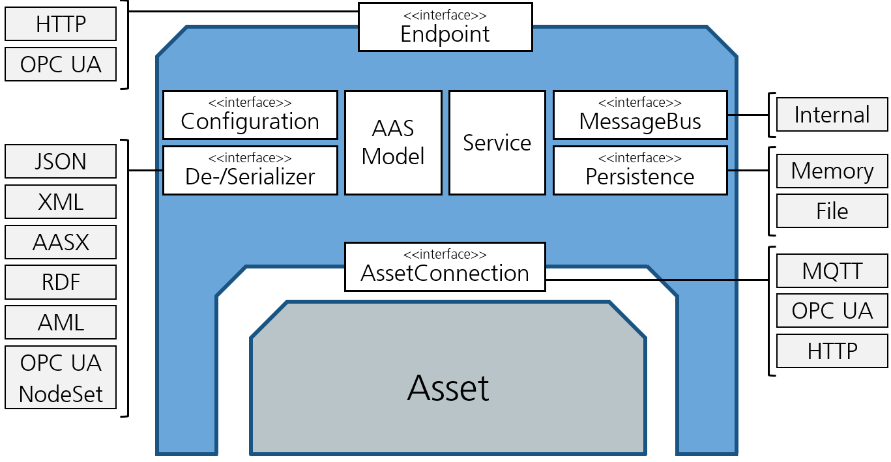
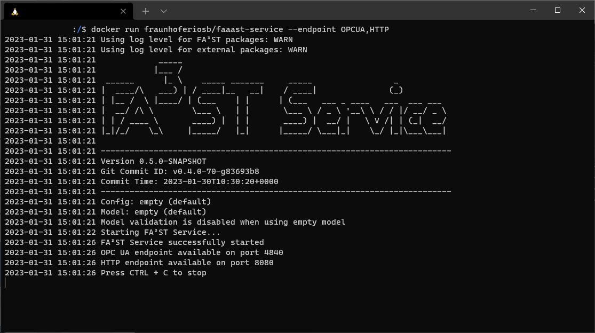

FA3ST Service is an open source Java-based software for creating and managing digital twins (DTs), so-called Asset Administration Shells (AASs). It is based on the standard document(s) published by the Plattform Industrie 4.0 [1] and has been used in the project to develop standard-conform executable DTs in the pilots. Main features are that it is designed to be easy to use and extend and that it can be connected to assets using arbitrary communication protocols. To create an reactive DT, all you need to do is start FA3ST Service with an AAS model and a configuration file and in return you get a DT with an AAS-compliant DT API for interaction of the DT with the outside world that can synchronize itself with the underlying asset(s).
FA3ST service is designed to be easily extendible and offers a variety of extension points via interfaces, e.g. for de-/serialization formats and persistence implementation as well as different protocols for endpoints and asset connections.
The following figure shows a high-level architectural view of the FA3ST Service components (white boxes). Most of them are designed as interfaces which enables supporting different concrete implementations in parallel via loose coupling and allows for easy extension in the future. The concrete implementations of these interface that are already shipped with FA3ST Service are represented by the light grey boxes on the sides.
The basic functionality of each function block is as follows:
A network endpoint that provides connectivity from external applications to the DT via a standardized API, e.g. via HTTP or OPC UA.
The Configuration interface allows for easy integration and configuration of any kind of implementation of one of the other interfaces via a single configuration file.
This is a code representation of the AAS meta model as defined in the standard document [1]. FA3ST Service uses the adminshell.io java-model open source library [2] for this which is currently in the process of moving to Eclipse AAS4j [3].
The two interfaces allow implementing different de-/serialization algorithms. This is important because the standard defines multiple data formats (JSON, XML, RDF, AutomationML) that should be supported.
The message bus enables communication and synchronization between the different components in FA3ST Service. This is crucial to keep a consistent state, e.g. when having both an HTTP and OPC UA endpoint.
This interface abstracts from concrete implementations of data storage so that it is easy to integrate any kind of data storage into a DT. Current implementation include in-memory storage as well as file-based storage.
This interface defines how the DT interacts with the actual (physical) asset/device. As assets can communicate via lots of different protocols, e.g. HTTP, OPC UA, Profibus, CAN bus, etc., it is crucial that the AAS service library allows custom implementations of this connection logic. FA3ST Service ships with implementation for HTTP, OPC UA and MQTT.
FA3ST Service tries to be flexible and user-friendly but providing clear interfaces for custom extensions as well as a sophisticated configuration mechanism that allows to create your own DT without writing any code. Instead, FA3ST Service is used by providing a configuration file together with your AAS model file on startup. It can be used via command-line interface, as docker container or as embedded library.
As keeping the DT in sync with the real world is crucial, FA3ST Service introduced the concept of asset connection which goes beyond what is defined in the AAS specification. The AssetConnection interface defines the three conceptual interaction patterns between DT and its asset(s) in a protocol-agnostic way: read/write values, subscribe to values, and execute operations. This protocol-agnostic definition allows FA3ST Service to be integrated with any kind of communication protocol.
FA3ST Service also provides experimental support for integrating time series data into a DT, either stored in the DT itself or from external databases. The implementation is based on a pre-release version of the SubmodelTemplate Time Series Data (SMT Time Series Data) specification; an extension/companion specification to the AAS specification.
FA3ST Service has been published as open source [4] and continuously enhanced and improved over time. Major progress is that FA3ST Service now supports all of the defined AAS functionality and data formats. It also provides a full-fledge OPC UA endpoint und supports HTTP and MQTT asset connections. Additionally, many smaller improvements and extensions have been made, e.g. all asset connection now support basic authentication and automatic reconnection upon connection loss, support for generic submodel template processors as well as support for concrete submodel template Time Series Data with data being stored in external an InfluxDB. You can find a detailed overview of improvements and fixes over time in the changelog [5].
Overall, FA3ST Service has been established as an open source AAS implementation that is recognized and used in the AAS community.
> java -jar starter-{version}.jar --model myModel.json –config myConfig.json
Full list of available CLI parameters:
| Name (short) | Name (long) | Description |
|---|---|---|
| -c | --config | The config file to use. |
| --emptyModel | Starts the FAST service with an empty Asset Administration Shell Environment. | |
| --endpoint | Additional endpoints that should be started. | |
| -h | --help | Print help message and exit. |
| --loglevel-external | Sets the log level for external packages. This overrides the log level defined by other commands such as -q or -v. | |
| --loglevel-faaast | Sets the log level for FA³ST packages. This overrides the log level defined by other commands such as -q or -v. | |
| -m | --model | The model file to load. |
| --[no-]autoCompleteConfig | Autocompletes the configuration with default values for required configuration sections. | |
| --[no-]modelValidation | Validates the AAS Environment. | |
| -q | --quite | Reduces log output (ERROR for FAST packages, ERROR for all other packages). Default information about the starting process will still be printed. |
| -v | --verbose | Enables verbose logging (INFO for FAST packages, WARN for all other packages). |
| -V | --version | Print version information and exit. |
| -vv | Enables very verbose logging (DEBUG for FAST packages, INFO for all other packages). | |
| -vvv | Enables very very verbose logging (TRACE for FAST packages, DEBUG for all other packages). | |
| <key=value> | Additional properties to override values of configuration using JSONPath notation without starting '$.' (see https://goessner.net/articles/JsonPath/) |
Pre-built docker images for FA3ST Service are published on Docker Hub [6] and can easily be run via
> docker run fraunhoferiosb/faaast-service
To configure FA3ST Service in a docker container, you can either use the CLI commands listed above or use environment variables.
Starting a FA3ST Service from code can be done in one command using the fluent API:
new Service(ServiceConfig.builder()
.core(CoreConfig.builder()
.requestHandlerThreadPoolSize(2)
.build())
.persistence(PersistenceInMemoryConfig.builder()
.environment(EnvironmentSerializationManager
.deserialize(new File("myModel.json"))
.getEnvironment())
.build())
.endpoint(HttpEndpointConfig.builder()
.port(8080)
.build())
.messageBus(MessageBusInternalConfig.builder()
.build())
.build())
.start();
When executed via CLI the output looks similar to this

Ease-of-use has been a primary objective in designing FA3ST Service. It has been achieved by offering different usage modes (CLI, docker, embedded) and use of a single easy-to-maintain configuration file resulting in a no-code usage approach.
FA3ST Service also offers lots of software interface to extend or adjust the software to the users need. These interfaces are documented on code-level and also described in a human-focused documentation.
For communication with the outside world, DTs realized with FA3ST Service offer a standardized AAS-compliant DT API which currently can be used based on HTTP, OPC UA, or both at the same time. This interface can be used to register, read, write, update, delete, and search for AAS and their subelements.
The software is based on Java 11. The code has dependencies on multiple open source libraries, e.g. Eclipse Jetty [7] or Jackson [8]. For the AAS metamodel and de-/serialization we use the open source library java-model [2] resp. java-serializer [9] from adminshell.io, which is currently moving to Eclipse AAS4j [3].
All required libraries are licensed under either Apache 2.0, LGPL or MIT.
The software is open source under Apache 2.0 License.
TRL 5/6
[2] https://github.com/admin-shell-io/java-model/
[3] https://github.com/eclipse-aas4j/aas4j
[4] https://github.com/FraunhoferIOSB/FAAAST-Service
[5] https://faaast-service.readthedocs.io/en/latest/changelog/changelog/
[6] https://hub.docker.com/r/fraunhoferiosb/faaast-service
[7] https://www.eclipse.org/jetty/
[8] https://github.com/FasterXML/jackson
[9] https://github.com/admin-shell-io/java-serializer
FA3ST Service has been applied in the Sidenor and Hydro use cases.